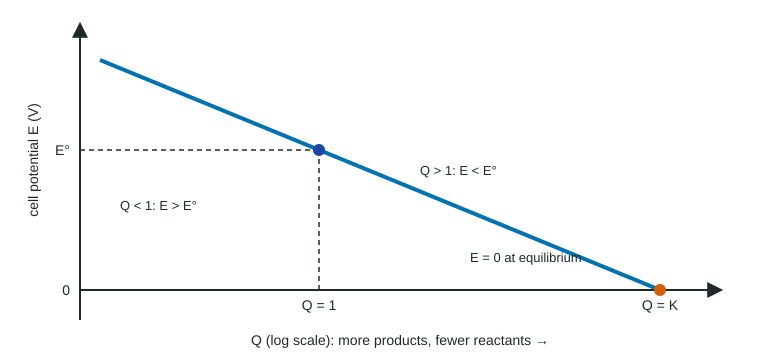

Every E° in topic 9.9 assumed standard conditions: every dissolved species at 1 M. Real batteries are almost never like that, and their concentrations change as they run. This page explains how the cell potential, E, depends on concentration, and why a battery eventually goes dead.
The idea: Q decides the drive
From Unit 7 you know that a reaction mixture moves in the direction that brings Q toward K. The further Q is from K, the stronger the drive. A cell's voltage measures that drive, so it changes with Q in the same way ΔG does:
- Q < 1 (less product or more reactant than standard): the reaction is pushed harder forward, so E > E°.
- Q = 1 (standard concentrations): E = E°.
- Q > 1 (more product or less reactant): the drive is weaker, so E < E°.
- Q = K (equilibrium): there is no net drive, so E = 0.

Figure 1 shows the pattern. Q is written from the balanced equation in the usual way, with only aqueous species and gases; solid electrodes and spectator ions in the salt bridge never appear in it.
The Nernst equation
The exact relation is on the equations sheet:
E = E° − (RT/nF) ln Q
When Q = 1, ln Q = 0 and E = E°. When Q < 1, ln Q is negative, so the subtracted term makes E larger. When Q > 1, ln Q is positive and E is smaller. The exam mainly asks you to reason about the direction of the change, as in the example below.
Worked example (reasoning). A cell runs Zn(s) + Cu2+(aq) → Zn2+(aq) + Cu(s), E° = 1.10 V. The zinc half-cell has [Zn2+] = 0.10 M and the copper half-cell has [Cu2+] = 1.0 M. Is E greater or less than 1.10 V?
Write Q from the balanced equation, leaving out the solids: Q = [Zn2+]/[Cu2+] = 0.10/1.0 = 0.10.
Q < 1, so the reaction is further from equilibrium than at standard conditions and E > E°. (The measured value is about 1.13 V.)
Notice it is the ratio that counts. A cell with [Zn2+] = 0.50 M and [Cu2+] = 0.050 M has Q = 10 > 1, so E < E°, even though both concentrations are below 1 M.
Why batteries die
As a galvanic cell runs, reactants are used and products form, so Q rises. The voltage falls slowly, then the cell reaches Q = K, where E = 0 and no current flows. A "dead" battery has not run out of electrons; its reaction has reached equilibrium, often with plenty of reactant left. Recharging uses an outside power supply (an electrolytic process) to push Q back down.
Concentration cells
A concentration cell uses the same half-reaction in both half-cells, at different concentrations: for example, Cu in 0.010 M Cu2+ and Cu in 1.0 M Cu2+. Since the half-reactions are identical, E°cell = E°(cathode) − E°(anode) = 0. Yet it gives a voltage, because the concentrations differ.
Which way does it run? Toward equal concentrations. Copper is oxidized in the dilute beaker (the anode), adding Cu2+ there, and Cu2+ is reduced in the concentrated beaker (the cathode), removing Cu2+. For this cell Q = [Cu2+]dilute/[Cu2+]concentrated = 0.010, which is less than 1, so E > 0. The cell runs until the two concentrations are equal (Q = 1 = K) and E = 0. A larger concentration difference gives a larger starting voltage. Nerve cells use the same principle: ion concentration differences across a membrane produce a voltage.
Predicting changes
| Change | Effect on Q | Effect on E |
|---|---|---|
| Add AgNO3 to the silver half-cell | falls | rises |
| Add Ni(NO3)2 to the nickel half-cell | rises | falls |
| Use a bigger nickel strip | none (solid) | none |
| Let the cell run | rises | falls toward 0 |